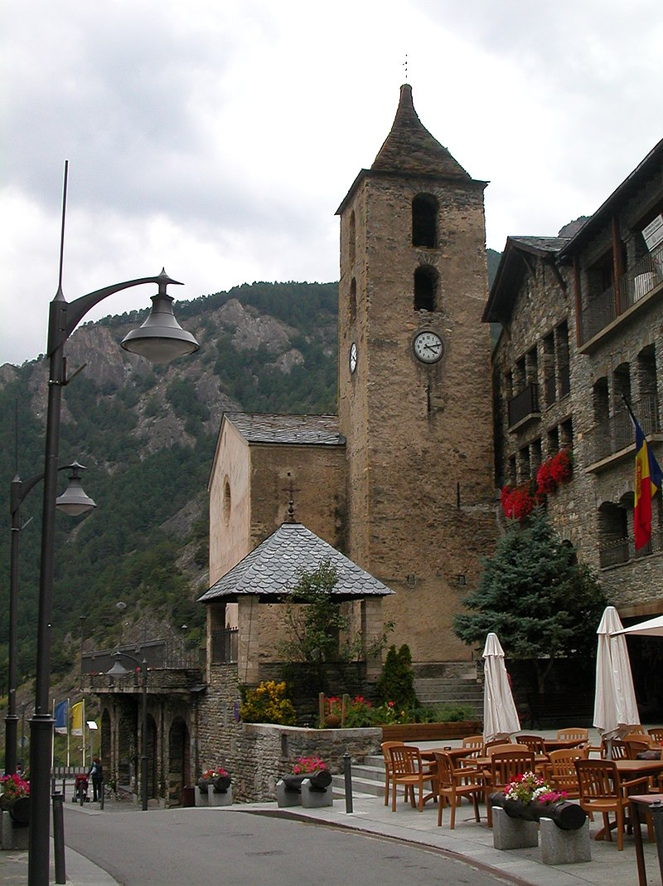

Ordino
- Lagos y Mirador de Tristaina
-
Ruta del Ferro
- Parque Natural de Sorteny

La ruta del Hierro es una de las excursiones mas bonitas y aptas para toda la familia.
Es una ruta de poco más de 4 kilometros con muy poca pendiente, que nos lleva desde la mina de llorts, hasta el asseradero y la muela de La Cortinada,
mostrándonos el camino que recorrian los antiguos trabajadores de la industia del hierro.
A través del camino nos acompañará el río Valira del Norte, y una seríe de esculturas modernas, que nos ayudarán a comprender de forma visual lo que esta actividad suponía para los antiguos habitantes de Andorra
mientras disfrutamos de la naturaleza.